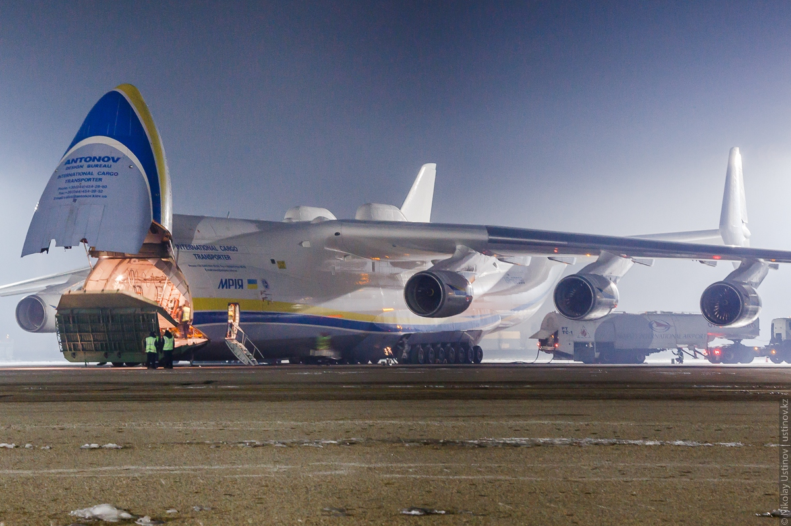

The Antonov An-225 Mriya (Ukrainian: Антонов Ан-225 Мрія, lit. 'dream' or 'inspiration'; NATO reporting name: Cossack) is a strategic airlift cargo aircraft that was designed by the Antonov Design Bureau in the Ukrainian SSR within the Soviet Union during the 1980s. It is powered by six turbofan engines and is the heaviest aircraft ever built, with a maximum takeoff weight of 640 tonnes (705 short tons; 1,410×103 lb). It also has the largest wingspan of any aircraft in operational service. The single example built has the Ukrainian civil registration UR-82060. A second airframe with a slightly different configuration was partially built. Its construction was halted in 1994 because of lack of funding and interest, but revived briefly in 2009, bringing it to 60–70% completion.
The Antonov An-225 was initially developed as an enlargement of the Antonov An-124 to transport Buran-class orbiters. The only An-225 airplane was completed in 1988. After successfully fulfilling its Soviet military missions, it was mothballed for eight years. It was then refurbished and reintroduced, and is in commercial operation with Antonov Airlines, carrying oversized payloads. The airlifter holds the absolute world record for an airlifted single-item payload of 189,980 kg (418,830 lb) , and an airlifted total payload of 253,820 kg (559,580 lb). It has also transported a payload of 247,000 kg (545,000 lb) on a commercial flight.
